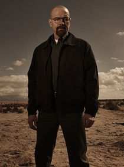

Sinopsis
Walter es un poco notable, poco carismático profesor de química, que
descubre su nueva pasión por la vida, luego de enterarse que tiene cáncer terminal.
Alguna vez fue un químico exitoso... pero ahora él enseña en una escuela secundaria en Albuquerque,
Nuevo México y trabaja medio tiempo en un auto-lavado para proveer a su familia: su esposa Skyler (Anna Gunn),
quien logra modestos ingresos al vender y comprar artículos en eBay, y su hijo Walter Jr.,
un joven adolescente fuerte de 17 años que sufre de parálisis cerebral. Al darse cuenta que no
tiene más que a su familia por la cual vivir, su sentido de propósito lo convierte en un hombre de acción,
mientras se adentra en una vida excitante de crímenes, buscando proveer para los que ama.
Personajes
Walter White

Walter "Walt" Hartwell White, también conocido por su seudónimo
clandestino "Heisenberg", es un químico y profesor de química de Albuquerque, Nuevo
México que, tras ser diagnosticado con cáncer de pulmón inoperable, decide empezar a fabricar metanfetamina para poder mantener a
su familia provista de cara al futuro. Walt era un químico prometedor que contribuyó
en el auge de la compañía multimillonaria Gray Matter Technologies, pero salió de la empresa de forma abrupta
vendiendo su parte de la misma por cinco mil dólares. Los fundadores Elliott y Gretchen Schwartz se casan
y hacen una fortuna, mientras que Walt les acusa de apoderarse de sus contribuciones para tener éxito sin darle ningún crédito.
Sin saber nada sobre el tráfico de drogas, Walt obtiene la ayuda de un ex-estudiante suyo, Jesse Pinkman, para la fabricación
y sobretodo para la venta de la droga. Su conocimiento científico y dedicación a la calidad le hacen producir metanfetamina a
un nivel de pureza insuperable. Walt lleva a cabo un proceso alternativo utilizando metilamina, lo cual otorga a
su producto un distintivo color azul: el cristal azul empieza instantáneamente a dominar el mercado
y se hace popular entre traficantes y adictos. En principio, Walter rechaza el uso de violencia, pero pasa gradualmente
a verlo como algo necesario y se convierte en un despiadado capo de la droga movido por su propio ego y
su codicia. A pesar de ello, tanto su preocupación con su familia como su lealtad hacia Jesse tienden a permanecer intactas.
Según progresa la historia, Walter pasa a ser alguien más oscuro y peligroso.
Jesse Pinkman
Jesse Bruce Pinkman es el compañero de Walter White en el tráfico de metanfetamina. En el instituto, Jesse era un consumidor, fabricante y traficante de poca monta de metanfetamina. Era un estudiante que prestaba poca atención a las clases de química de su profesor, el propio Walter. Años después, Jesse se dedica al tráfico de droga con el seudónimo "Cap'n Cook" y añade polvo de chili a su producto para caracterizarlo.
Al buscar a Jesse para que trabajen juntos, Walter insiste en hacer un producto más puro, dejando de utilizar la pólvora de chili y enseñando a Jesse a cocinar un mejor producto. A menudo trata a Jesse como un hijo problemático que a menudo necesita que le corrijan. A pesar de la fricción entre ambos, él y Walt tienen una profunda lealtad el uno hacia el otro. La propia familia de Jesse le echó de casa por sus problemas con las drogas.
Al igual que Walt, a Jesse le perturba la brutalidad existente en los altos niveles del tráfico de droga, pero hace lo que cree ser necesario. A menudo sufre sentimientos de culpa debido a las muertes de personas con la que se ha asociado, todas relacionadas con el negocio. Ocasionalmente va a reuniones de Narcóticos Anónimos para que le ayuden con estos sentimientos.
Hank Schrader
Henry R. "Hank" Schrader es el marido de Marie Schrader (hermana de Skyler White) y agente especial a cargo de las oficinas de la DEA en Albuquerque. Un hombre enérgico y bullicioso, Hank es además cuñado de Walter White.
A pesar de que es un agente extremadamente competente y que realmente se preocupa por Marie, Walter, Skyler y Walter Jr., su estilo a menudo acaba aislándole del peligro al que se expone diariamente.
La investigación de Hank acerca del traficante de metanfetamina conocido como "Heisenberg" — fuente de un cristal azul misterioso y de alta calidad — acaba llevándole a descubrir el imperio de drogas de Gus y a acabar con Gustavo Fring. No obstante, Hank desconoce que "Heisenberg" es el alter-ego de su propio cuñado, Walter. Cuando relaciona a Walter con Gale Boetticher, conocido proveedor de cristal azul para el negocio de Fring, Hank descubre el secreto de Walt y a partir de entonces dedica todos sus esfuerzos en llevarle a la justicia de una vez por todas. Para ello, incluso llega a colaborar con Jesse Pinkman (ex-compañero de Walt en las actividades ilegales) pese al turbulento historial que tiene con él.
Skyler White
Skyler White (de soltera Lambert) es la mujer de Walter White y madre de Walter White Jr. y Holly White. Skyler ha tenido múltiples trabajos o actividades para obtener dinero: escribiendo historias cortas, vendiendo objetos en eBay, trabajando como contable en Beneke Fabricators y ayudando a Walt con el local de lavado. Skyler quiere mucho a Walter, pero su matrimonio pasa a tener problemas debido a sus ausencias y su comportamiento extraño, lo cual acaba llevando a su separación.
Después, cuando Walt revela sus actividades en el negocio del tráfico de metanfetamina, ella trata de pedir el divorcio pero acaba haciéndose a la idea e incluso le ayuda con el lavado de su dinero ilícito. Según Walter va haciéndose cada vez más un duro criminal, ella pasa a quedarse asustada por su seguridad y la de los niños e intenta mantenerles lo más lejos posible de su padre.
Skyler tiene una hermana, Marie Schrader, casada con Hank Schrader, agente de la DEA que a menudo se encuentra investigando las actividades de su propio cuñado sin ser consciente de ello.
Walter White Jr.
Walter Hartwell White Jr., también conocido por el apodo "Flynn" es el hijo de Walter y Skyler White y el hermano de Holly White. Estudia en el mismo instituto en el que su padre imparte clases.
Walter Jr. ha nacido con parálisis cerebral, lo cual puede notarse tanto en la dificultad al hablar como en los problemas al moverse, para lo cual utiliza muletas.